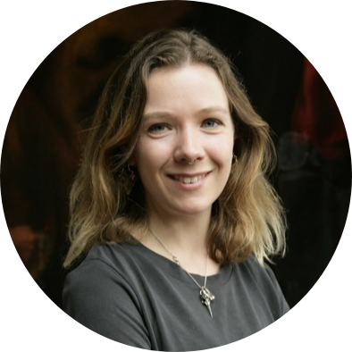

|  |
Sophie LambPaintings Conservator and Web Developer in training I am a an advanced intern in paintings conservator at the Hamilton Kerr Institute in Cambridge. My research interests are in the materials and technology of oil paintings;
I am
also writing about theories of tacit knowledge in conservation
practice. |
| Dates | Work |
|---|---|
| 2020 | WVTA Web Design | 2019 - 2021 | Paintings conservator |
| Bootstrap Framework | ⭐⭐ |
| Web Development | ⭐ |
| Painting | ⭐⭐⭐⭐ |